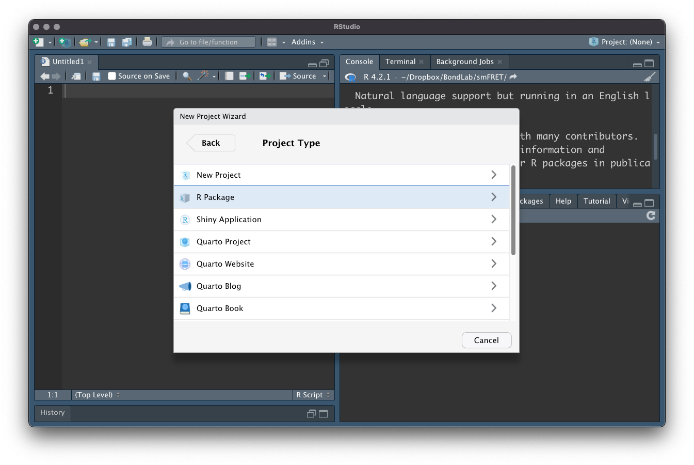

Any time I’ve chatted to someone recently about some of their R code, I keep finding myself saying:
We could make that into an R package! It only takes like 15 minutes!
The reason I keep harassing people like this, is because it really is quite easy to make an R package! It’s a daunting task at first, but thanks to the hard work of many people in the tidyverse team, all it takes is a few function calls to get a package set up and running. Then you can upload to github and it’s ready for either you (on another computer) or a collaborator to install & use your hand-crafted R code!
What’s in a name.
Before we do get started, I recommend using the {available}(Ganz et al. 2022) package to check for names that might already be taken on repositories like CRAN & Bioconda. Using the browse = TRUE variable will open up a browser for various website for your potential package name, but I like to set this to false when testing out a bunch of different package names to find one that isn’t taken and is also coherent.
available::available( name ="fretr", browse =FALSE, )
── fretr ───────────────────────────────────────────────────────────────────────
Name valid: ✔
Available on CRAN: ✔
Available on Bioconductor: ✔
Available on GitHub: ✔
Abbreviations: http://www.abbreviations.com/fret
Wikipedia: https://en.wikipedia.org/wiki/fret
Wiktionary: https://en.wiktionary.org/wiki/fret
Sentiment:---
Required Packages
There are a couple of required packages to install first. These will require some compilation so you’ll want to have R-tools installed if you are on windows, which will require administrator privileges.
Package setup, filling in boilerplate package structure, handling dependencies, publishing to GitHub and even to CRAN, is all done by {usethis}(Wickham, Bryan, and Barrett 2022)
Once you have the packages successfully installed, you can create a new package, right from the R console! Or use the “New Project” button inside of RStudio.
The path argument will create the set up the required files for the package in the path specified. If the path does not exist, it will be created. This means you can create the folder for your package to live in right from the here!
usethis will set it up to work nicely with RStudio, which is my recommended development environment.
Click the “New Directory” so that your R package has its own clean directory to live in.
Click “R Package”

Enter your package name
Choose the folder where the source files for your package will be saved.
Initialise a git repository to use version control (not essential, but very recommended)
Use {renv}(Ushey 2022) to create a reproducible development environment (not essential, but very recommended)
Click ‘Create Project’ to initialise the project!
References
Ganz, Carl, Gábor Csárdi, Jim Hester, Molly Lewis, and Rachael Tatman. 2022. “Available: Check If the Title of a Package Is Available, Appropriate and Interesting.”https://CRAN.R-project.org/package=available.